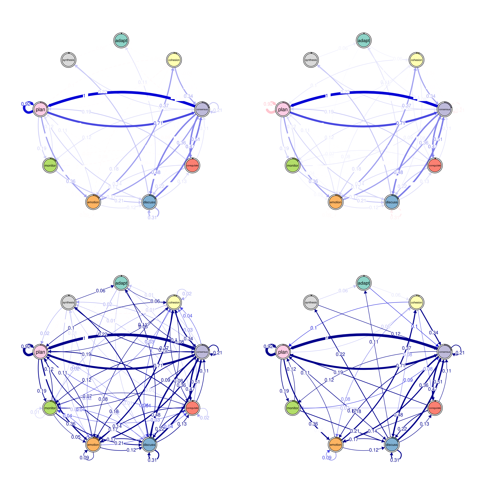
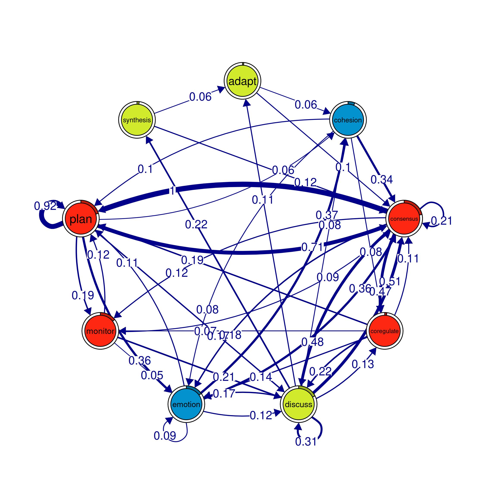
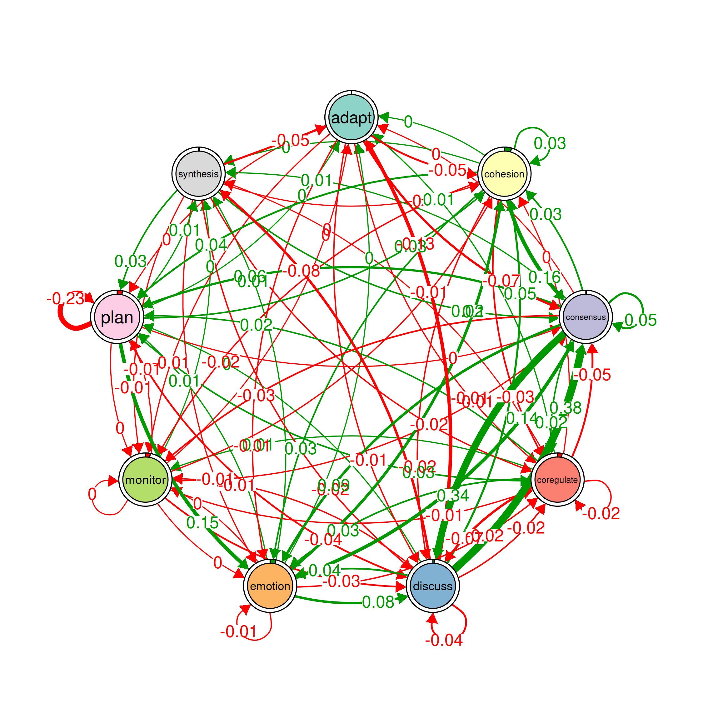

FTNA tutorial
# Install 'tna' package from CRAN if needed (uncomment if required).
# install.packages("tna")
# Load packages
library("tna")
# Load example data provided within the 'tna' package,
# representing group regulatory interactions
data(group_regulation)
# Run FTNA on 'group_regulation' data using raw counts of
# transitions ("absolute" type) and print the result
model <- ftna(group_regulation)
# Print the output to inspect the model
print(model)
#> State Labels
#>
#> adapt, cohesion, consensus, coregulate, discuss, emotion, monitor, plan, synthesis
#>
#> Transition Frequency Matrix
#>
#> adapt cohesion consensus coregulate discuss emotion monitor plan
#> adapt 0 139 243 11 30 61 17 8
#> cohesion 5 46 844 202 101 196 56 239
#> consensus 30 94 519 1188 1190 460 295 2505
#> synthesis
#> adapt 0
#> cohesion 6
#> consensus 48
#> [ reached 'max' / getOption("max.print") -- omitted 6 rows ]
#>
#> Initial Probabilities
#>
#> adapt cohesion consensus coregulate discuss emotion monitor
#> 0.011 0.060 0.214 0.019 0.175 0.151 0.144
#> plan synthesis
#> 0.204 0.019
# Calculate the Transition Network Analysis (TNA) on the group_regulation
# data with scaled weights between 0 and 1
model_scaled <- ftna(group_regulation, scaling = "minmax")
print(model_scaled) # Print the FTNA model with scaled weights
#> State Labels
#>
#> adapt, cohesion, consensus, coregulate, discuss, emotion, monitor, plan, synthesis
#>
#> Transition Frequency Matrix
#>
#> adapt cohesion consensus coregulate discuss emotion monitor plan
#> adapt 0.0000 0.0555 0.097 0.0044 0.012 0.024 0.0068 0.0032
#> cohesion 0.0020 0.0184 0.337 0.0806 0.040 0.078 0.0224 0.0954
#> consensus 0.0120 0.0375 0.207 0.4743 0.475 0.184 0.1178 1.0000
#> synthesis
#> adapt 0.0000
#> cohesion 0.0024
#> consensus 0.0192
#> [ reached 'max' / getOption("max.print") -- omitted 6 rows ]
#>
#> Initial Probabilities
#>
#> adapt cohesion consensus coregulate discuss emotion monitor
#> 0.011 0.060 0.214 0.019 0.175 0.151 0.144
#> plan synthesis
#> 0.204 0.019Plotting
# Plotting the two weights together to see if the scaling distorts the data
# Combine weights from absolute and scaled models into a data frame for plotting
weights_data <- data.frame(
Absolute = as.vector(model$weights), # Extract absolute weights as a vector
Scaled = as.vector(model_scaled$weights) # Extract scaled weights as a vector
)
corr <- cor(weights_data$Absolute, weights_data$Scaled, method = c("pearson")) |>
round(digits = 2)
# Create a scatter plot comparing absolute vs. scaled weights
plot_abs_scaled <- ggplot(weights_data, aes(x = Absolute, y = Scaled)) +
geom_point(color = "steelblue", alpha = 0.6, size = 2) + # Add points with specified aesthetics
geom_smooth(formula = y ~ x, method = "lm", color = "red", linetype = "dashed") + # Add a linear trend line
# geom_smooth(method = lm, formula = y ~ x, se = FALSE) +
geom_text(x = 0.1, y = 0.9, label = paste0('r = ', corr), color = 'red')
# stat_cor(aes(label = after_stat(r.label)), label.x = 0.1, label.y = 0.9,
# size = 4, color = "black", method = "spearman") + # Display Spearman correlation
labs(x = "Absolute Weights", y = "Scaled Weights") + # Label axes
theme_minimal() # Apply a minimal theme for the plot
#> NULL
# Display the scatter plot
plot_abs_scaled
# Calculate the Transition Network Analysis (TNA) on the `group_regulation`
# data with ranked weights
model_ranked <- ftna(group_regulation, scaling = "rank")
print(model_ranked) # Print the FTNA model with ranked weights
# Combine weights from absolute and ranked models into a data frame for plotting
weights_data <- data.frame(
Absolute = as.vector(model$weights), # Extract absolute weights as a vector
Ranked = as.vector(model_ranked$weights) # Extract ranked weights as a vector
)
# Create a scatter plot comparing Absolute vs. Ranked weights with correlation annotations
plot_abs_ranked <- ggplot(weights_data, aes(x = Absolute, y = Ranked)) +
geom_point(color = "steelblue", alpha = 0.6, size = 2) + # Add points with specified aesthetics
geom_smooth(formula = y ~ x, method = "lm", color = "red", linetype = "dashed") + # Add a linear trend line
# stat_cor(aes(label = paste("Spearman: ", round(after_stat(r), 2))),
# method = "spearman", label.x = 0.1, label.y = 0.9, size = 4, color = "black") + # Spearman correlation annotation
# stat_cor(aes(label = paste("Pearson: ", round(after_stat(r), 2))),
# method = "pearson", label.x = 0.1, label.y = 0.8, size = 4, color = "darkgreen") + # Pearson correlation annotation
labs(x = "Absolute Weights", y = "Ranked Weights") + # Label axes
theme_minimal() # Apply a minimal theme for the plot
# Display the scatter plot
plot_abs_ranked
Pruning
layout(matrix(1:4, ncol = 2))
# Pruning with different methods
pruned_threshold <- prune(model_scaled, method = "threshold", threshold = 0.1)
pruned_lowest <- prune(model_scaled, method = "lowest", lowest = 0.15)
pruned_disparity <- prune(model_scaled, method = "disparity", alpha = 0.5)
# Plotting for comparison
plot(pruned_threshold)
plot(pruned_lowest)
plot(pruned_disparity)
plot(model_scaled, minimum = 0.05, cut = 0.1)
Patterns
# Identify 2-cliques (dyads) from the FTNA model with a weight threshold,
# excluding loops in visualization.
# A 2-clique represents a pair of nodes that are strongly connected based on
# the specified weight threshold.
layout(matrix(1:6, ncol = 3))
cliques_of_two <- cliques(
model_scaled, # The FTNA model with scaled edge weights
size = 2, # Looking for pairs of connected nodes (dyads)
threshold = 0.1 # Only include edges with weights greater than 0.1
)
# Print and visualize the identified 2-cliques (dyads)
print(cliques_of_two) # Display details of 2-cliques
#> Number of 2-cliques = 8 (weight threshold = 0.1)
#> Showing 6 cliques starting from clique number 1
#>
#> Clique 1
#> consensus plan
#> consensus 0.21 1.00
#> plan 0.71 0.92
#>
#> Clique 2
#> consensus discuss
#> consensus 0.21 0.48
#> discuss 0.51 0.31
#>
#> Clique 3
#> discuss emotion
#> discuss 0.31 0.167
#> emotion 0.12 0.087
#>
#> Clique 4
#> emotion plan
#> emotion 0.087 0.11
#> plan 0.361 0.92
#>
#> Clique 5
#> consensus emotion
#> consensus 0.21 0.184
#> emotion 0.36 0.087
#>
#> Clique 6
#> monitor plan
#> monitor 0.01 0.12
#> plan 0.19 0.92
plot(cliques_of_two, ask = F, vsize = 20) # Visualize 2-cliques in the network
layout(matrix(1:6, ncol = 3))
# Identify 3-cliques (triads) from the FTNA model.
# A 3-clique is a fully connected set of three nodes, indicating a strong
# triplet structure.
cliques_of_three <- cliques(
model_scaled, # The FTNA model with scaled edge weights
size = 3, # Looking for triplets of fully connected nodes (triads)
threshold = 0.05 # Only include edges with weights greater than 0.05
)
# Print and visualize the identified 3-cliques (triads)
# Uncomment the code below to view the results
print(cliques_of_three) # Display details of 3-cliques
#> Number of 3-cliques = 5 (weight threshold = 0.05)
#> Showing 5 cliques starting from clique number 1
#>
#> Clique 1
#> consensus coregulate discuss
#> consensus 0.21 0.474 0.48
#> coregulate 0.11 0.018 0.22
#> discuss 0.51 0.133 0.31
#>
#> Clique 2
#> consensus discuss emotion
#> consensus 0.21 0.48 0.184
#> discuss 0.51 0.31 0.167
#> emotion 0.36 0.12 0.087
#>
#> Clique 3
#> consensus emotion plan
#> consensus 0.21 0.184 1.00
#> emotion 0.36 0.087 0.11
#> plan 0.71 0.361 0.92
#>
#> Clique 4
#> consensus monitor plan
#> consensus 0.207 0.12 1.00
#> monitor 0.091 0.01 0.12
#> plan 0.714 0.19 0.92
#>
#> Clique 5
#> cohesion emotion plan
#> cohesion 0.018 0.078 0.095
#> emotion 0.368 0.087 0.113
#> plan 0.062 0.361 0.920
plot(cliques_of_three, ask = FALSE) # Visualize 3-cliques in the network
layout(matrix(1:6, ncol = 3))
# Identify 4-cliques (quadruples) from the FTNA model.
# A 4-clique includes four nodes where each node is connected to every other
# node in the group.
# Uncomment the code below to view the results
cliques_of_four <- cliques(
model_scaled, # The FTNA model with scaled edge weights
size = 4, # Looking for quadruples of fully connected nodes (4-cliques)
threshold = 0.03 # Only include edges with weights greater than 0.03
)
# Print and visualize the identified 4-cliques (quadruples)
# Uncomment the code below to view the results
print(cliques_of_four) # Display details of 4-cliques
#> Number of 4-cliques = 11 (weight threshold = 0.03)
#> Showing 6 cliques starting from clique number 1
#>
#> Clique 1
#> consensus coregulate emotion plan
#> consensus 0.21 0.474 0.184 1.00
#> coregulate 0.11 0.018 0.135 0.19
#> emotion 0.36 0.039 0.087 0.11
#> plan 0.71 0.042 0.361 0.92
#>
#> Clique 2
#> consensus coregulate discuss emotion
#> consensus 0.21 0.474 0.48 0.184
#> coregulate 0.11 0.018 0.22 0.135
#> discuss 0.51 0.133 0.31 0.167
#> emotion 0.36 0.039 0.12 0.087
#>
#> Clique 3
#> coregulate discuss emotion monitor
#> coregulate 0.018 0.22 0.135 0.068
#> discuss 0.133 0.31 0.167 0.035
#> emotion 0.039 0.12 0.087 0.041
#> monitor 0.033 0.21 0.052 0.010
#>
#> Clique 4
#> consensus coregulate discuss monitor
#> consensus 0.207 0.474 0.48 0.118
#> coregulate 0.106 0.018 0.22 0.068
#> discuss 0.507 0.133 0.31 0.035
#> monitor 0.091 0.033 0.21 0.010
#>
#> Clique 5
#> consensus discuss emotion monitor
#> consensus 0.207 0.48 0.184 0.118
#> discuss 0.507 0.31 0.167 0.035
#> emotion 0.363 0.12 0.087 0.041
#> monitor 0.091 0.21 0.052 0.010
#>
#> Clique 6
#> coregulate emotion monitor plan
#> coregulate 0.018 0.135 0.068 0.19
#> emotion 0.039 0.087 0.041 0.11
#> monitor 0.033 0.052 0.010 0.12
#> plan 0.042 0.361 0.186 0.92
plot(cliques_of_four, ask = FALSE) # Visualize 4-cliques in the network
# Identify 5-cliques (quintuples) from the FTNA model, summing edge weights.
# Here, the sum of edge weights in both directions must meet the specified
# threshold for inclusion.
# Uncomment the code below to view the results
cliques_of_five <- cliques(
model_scaled, # The FTNA model with scaled edge weights
size = 5, # Looking for quintuples of fully connected nodes (5-cliques)
threshold = 0.1, # Only edges with total bidirectional weights greater than 0.1
sum_weights = TRUE # Sum edge weight in both directions when computing threshold
)
# Print and visualize the identified 5-cliques (quintuples)
print(cliques_of_five) # Display details of 5-cliques
#> Number of 5-cliques = 1 (weight threshold = 0.1)
#> Showing 1 cliques starting from clique number 1
#>
#> Clique 1
#> consensus coregulate discuss emotion plan
#> consensus 0.21 0.474 0.48 0.184 1.000
#> coregulate 0.11 0.018 0.22 0.135 0.188
#> discuss 0.51 0.133 0.31 0.167 0.018
#> emotion 0.36 0.039 0.12 0.087 0.113
#> plan 0.71 0.042 0.17 0.361 0.920
plot(cliques_of_five, ask = FALSE) # Visualize 5-cliques in the network
Graph level measures
summary(model_scaled)
#> # A tibble: 13 × 2
#> metric value
#> * <chr> <dbl>
#> 1 Node Count 9
#> 2 Edge Count 78
#> 3 Network Density 1
#> 4 Mean Distance 0.0240
#> 5 Mean Out-Strength 1.13
#> 6 SD Out-Strength 0.886
#> 7 Mean In-Strength 1.13
#> 8 SD In-Strength 0.878
#> 9 Mean Out-Degree 8.67
#> 10 SD Out-Degree 0.707
#> 11 Centralization (Out-Degree) 0.0156
#> 12 Centralization (In-Degree) 0.0156
#> 13 Reciprocity 0.986
summary(pruned_disparity)
#> # A tibble: 13 × 2
#> metric value
#> * <chr> <dbl>
#> 1 Node Count 9
#> 2 Edge Count 39
#> 3 Network Density 0.542
#> 4 Mean Distance 0.188
#> 5 Mean Out-Strength 0.900
#> 6 SD Out-Strength 0.700
#> 7 Mean In-Strength 0.900
#> 8 SD In-Strength 0.673
#> 9 Mean Out-Degree 4.33
#> 10 SD Out-Degree 1.22
#> 11 Centralization (Out-Degree) 0.234
#> 12 Centralization (In-Degree) 0.516
#> 13 Reciprocity 0.615Node level measures
# Compute centrality measures for the FTNA model
centrality_measures <- centralities(model_scaled)
# Print the calculated centrality measures in the FTNA model
print(centrality_measures)
#> # A tibble: 9 × 10
#> state OutStrength InStrength ClosenessIn ClosenessOut Closeness Betweenness
#> * <fct> <dbl> <dbl> <dbl> <dbl> <dbl> <dbl>
#> 1 adapt 0.203 0.212 14.6 5.83 21.6 20
#> 2 cohesion 0.658 0.667 6.61 6.54 18.7 0
#> 3 consensus 2.32 2.34 1.25 5.89 7.68 0
#> 4 coregulate 0.768 0.818 11.3 4.02 13.0 0
#> 5 discuss 1.27 1.26 7.22 3.30 7.68 0
#> 6 emotion 1.05 1.02 4.46 6.68 16.9 0
#> 7 monitor 0.562 0.480 10.8 5.24 13.0 7
#> 8 plan 1.54 1.56 11.6 5.88 16.8 9
#> 9 synthesis 0.260 0.275 12.0 5.72 16.9 21
#> # ℹ 3 more variables: BetweennessRSP <dbl>, Diffusion <dbl>, Clustering <dbl>
plot(centrality_measures)
# Convert the FTNA model to an igraph object and
# calculate HITS (Hub and Authority) scores
hits_results <- igraph::hits_scores(as.igraph(model_scaled))
# Extract the hub and authority scores from the HITS results for further analysis
hub_scores <- hits_results$hub
authority_scores <- hits_results$authority
# Print the hub and authority scores to view influential nodes
print(hub_scores)
#> adapt cohesion consensus coregulate discuss emotion monitor
#> 0.056 0.240 0.955 0.256 0.377 0.305 0.189
#> plan synthesis
#> 1.000 0.074
print(authority_scores)
#> adapt cohesion consensus coregulate discuss emotion monitor
#> 0.033 0.129 0.672 0.293 0.437 0.344 0.174
#> plan synthesis
#> 1.000 0.056
Community detection
detected_communities <- communities(model_scaled)
plot(detected_communities, minimum = 0.05)
print(detected_communities)
#> Number of communities found by each algorithm
#>
#> walktrap fast_greedy label_prop infomap
#> 1 3 1 1
#> edge_betweenness leading_eigen spinglass
#> 1 3 3
#>
#> Community assignments
#>
#> state walktrap fast_greedy label_prop infomap edge_betweenness leading_eigen
#> 1 adapt 1 1 1 1 1 1
#> 2 cohesion 1 2 1 1 1 3
#> 3 consensus 1 3 1 1 1 2
#> spinglass
#> 1 1
#> 2 3
#> 3 2
#> [ reached 'max' / getOption("max.print") -- omitted 6 rows ]Bootstrapping
# Perform bootstrapping on the FTNA model with a fixed seed for reproducibility
set.seed(265)
boot <- bootstrap(model_scaled, threshold = 0.05)
# Print the combined results data frame containing
print(summary(boot))
#> from to weight p_value sig cr_lower cr_upper ci_lower ci_upper
#> 2 cohesion adapt 0.002 0.51 FALSE 0.0015 0.0025 0.0004 0.0036
#> 3 consensus adapt 0.012 0.16 FALSE 0.0090 0.0150 0.0078 0.0163
#> 4 coregulate adapt 0.013 0.16 FALSE 0.0096 0.0160 0.0085 0.0177
#> [ reached 'max' / getOption("max.print") -- omitted 75 rows ]
# View non-significant edges which are less likely to be stable across bootstrap samples
print(boot, type = "nonsig")
#> Non-significant Edges
#>
#> from to weight p_value cr_lower cr_upper ci_lower ci_upper
#> 2 cohesion adapt 0.002 0.51 0.0015 0.0025 0.0004 0.0036
#> 3 consensus adapt 0.012 0.16 0.0090 0.0150 0.0078 0.0163
#> 4 coregulate adapt 0.013 0.16 0.0096 0.0160 0.0085 0.0177
#> [ reached 'max' / getOption("max.print") -- omitted 25 rows ]Comparing Models
# Create FTNA for the high-achievers subset (rows 1 to 1000)
Hi <- ftna(group_regulation[1:1000, ], scaling = "minmax")
# Create FTNA for the low-achievers subset (rows 1001 to 2000)
Lo <- ftna(group_regulation[1001:2000, ], scaling = "minmax")
# Plot a comparison of the "Hi" and "Lo" models
# The 'minimum' parameter is set to 0.001, so edges with weights >= 0.001 are shown
plot_compare(Hi, Lo, minimum = 0.0001)
# Run a permutation test to determine statistical significance of
# differences between "Hi" and "Lo"
# The 'it' parameter is set to 1000, meaning 1000 permutations are performed
Permutation <- permutation_test(Hi, Lo, it = 1000)
# Plot the significant differences identified in the permutation test
plot(Permutation, minimum = 0.01)
Centrality stability
Centrality_stability <- estimate_centrality_stability(model_scaled, iter = 100)
plot(Centrality_stability)